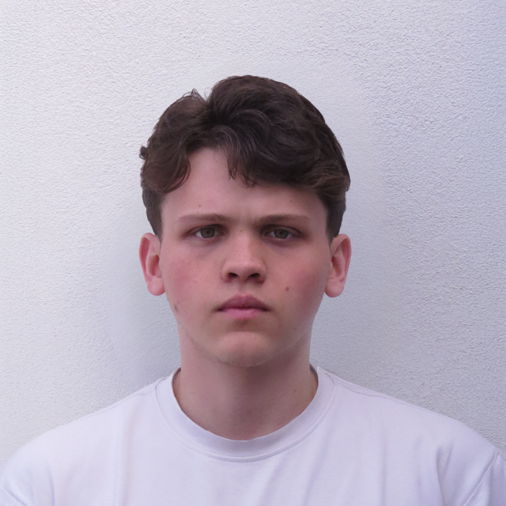

Nasci em uma cidade
pequena no Brasil
Fotos feitas para o portfólio
na cadeira de projeto na UA.
Estamos em constante mudança, e
negar que as coisas não serão mais
as mesmas é o que traz angústia.
clique para continuar